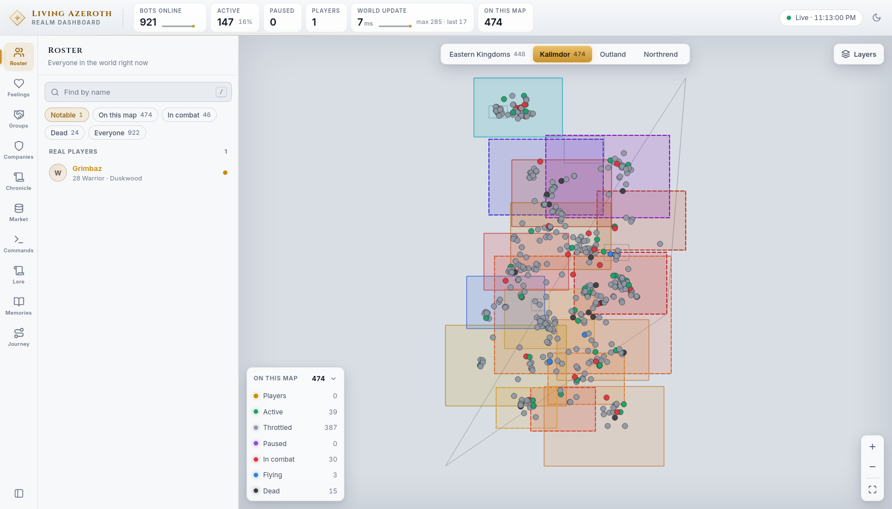

Open it in a browser and you get one screen with five regions. Nothing needs installing, and
nothing needs a login. This page explains each region, then the map and the inspector in detail.
The dashboard is served by the world server itself, on port 8787. On the machine running the
realm that is:
http://127.0.0.1:8787/
To reach it from another machine on your own network, the server's Dashboard.Bind setting has to
include that machine's address. Reading the dashboard needs no password. Only one thing is protected — pausing
and resuming a character — and that is covered under Commands.
This realm trusts whoever can reach it. There are no per-user accounts. Anyone who can open the
page can read everything on it, so bind it to your own machine or a private network rather than the open
internet.
The five regions
Every screen is made of the same five parts. Only the panel in the middle-left changes.
Region
Where
What it is
Top bar
Across the top
Live statistics for the whole realm, the connection light, and the theme switch.
Rail
Far left, icons
Ten buttons, one per panel. The lit one is open.
Dock
Beside the rail
The open panel. Its heading and one-line description tell you what you are looking at.
Stage
The middle
The world map.
Inspector
Right, when summoned
Everything about one character or one company. Appears when you select something.
Clicking the rail button of the panel that is already open collapses the dock and gives the map the
full width. Clicking it again brings the panel back. There is also a collapse button at the bottom of the rail.
The top bar
Six tiles, refreshed every two seconds. Two of them carry a sparkline of the last three minutes; hovering a
tile tells you its range over that window.
Tile
Meaning
Bots online
How many characters the world is running. The sparkline shows the last few minutes.
Active
Bots being updated at full rate, with their share of the total underneath. The rest are throttled — still in the world, updated less often, to save the machine.
Paused
Bots you have frozen in place. The tile lights up when it is above zero.
Players
Real human players online.
World update
How long the server takes per tick, in milliseconds, with max and last beside it. It turns to a warning colour above 50 ms. Low is healthy.
On this map
How many characters are on the continent you are currently looking at. Matches the map legend's total.
At the right-hand end, a dot and a clock read Live and the time of the last snapshot. If it says
Not updating with a reason, the page has lost the server — the numbers on screen are the last good ones.
The map
The centre of the screen is a live map of one continent at a time. Every character outdoors is a dot, moving
as they move.
Switching continents
Four buttons sit above the map — Eastern Kingdoms, Kalimdor, Outland and
Northrend — each showing how many characters are on it right now. Your choice is remembered.
Kalimdor, in the light theme. The shaded rectangles are zones held or contested by
companies, coloured by the company that holds them.
Markers
Each dot is coloured by what that character is doing. Real players and paused bots are drawn larger with a
bright ring so they stand out; the selected character gets a pulsing ring. Hovering a dot names them, gives
their level, race, class and what they are up to. Clicking a dot opens them in the inspector.
Players — a real human, not a bot.
Active — running at full tick.
Throttled — in the world, updated less often. Most of the realm sits here.
Paused — frozen by you from the Commands panel.
In combat — fighting right now.
Flying — on a flight path.
Dead — awaiting a resurrection.
A character only ever counts as one of these. If they are dead and throttled, they show as dead.
The legend, and hiding what you don't want
The box at the bottom left is headed On this map with the total beside it. Each row is a state with
its own count — and each row is a button: click a row to hide that state's markers, click again to bring
them back. Hiding Throttled is the usual move, since it is most of the realm and it buries everything
else. The chevron collapses the whole box.
Layers
The Layers button opens three switches. This is also where the painted map is turned on
and off.
Toggle
Default
What it does
Map art
On
The painted world map from your game client. Zone art fades in as you zoom.
Zone outlines
Off
A border around each zone. Forced on whenever map art is off, so the map is never blank.
Company holdings
On
Shades each zone in the colour of the company that holds or contests it.
Zooming
The buttons at the bottom right are zoom in, zoom out, and fit the continent. Zone names only appear
once you are zoomed in past a certain point — so if the map looks unlabelled, zoom in.
Zoomed in on Duskwood. Zone names have appeared, the neighbouring holdings are shaded by
their owners, and the selected character carries a ring. The inspector on the right opened when the marker
was clicked.
Territory
With Company holdings on, hovering a shaded zone tells you its level range, who holds it, who
contests it, how influence is split, and whether a company keeps a seat there. Contested zones get a thicker
dashed border. Clicking a held zone opens the company that holds it in the inspector. Select a company
and the map re-shades: its lands stand out strongly and everything else dims.
The inspector
Select anyone — from the map, the roster, or any name link anywhere in the dashboard — and the right-hand
drawer opens on them. Close it with the × or the Esc key.
At the top: their name, level, race and class; badges for faction and whether they are a real player; a pill
for what they are doing; and where they are standing. Then up to three buttons — Pause (or
Resume), Show on map, and Journey, which opens their whole record full screen.
The four tabs
The Story tab. Every bot has one of these — who they are, what drives them, and where
they came from. It is what they sound like when they speak.The Memories tab on the same character: 112 memories, 45 of them defining, each weighed
and written in her own words.The Ties tab: how this character feels about everyone they have met, and how everyone
feels about them.
Tab
What is on it
Story
Who they are, what drives them, and their backstory. Written for them when the realm was populated. Real players have none — this is a bots-only tab in practice.
Ties
Counts of ties, warm and cold; then every relationship, warmest to coldest, each with a score, a phrase describing it, how many moments built it, and a meter. Weak ties fold away into Passing acquaintances.
Memories
Everything this character still carries, heaviest first, each weighed out of ten, in their own words.
Details
The mechanical facts: activity, state, location, group, GUID, and the AI strategies currently driving them. This is the tab to look at when something seems stuck.
Whichever tab you leave open is the one you come back to next time.
Select a company instead of a character and the inspector shows that instead: its seats, the lands
it holds and contests, its standing with every other company and why, and its recent incidents.
Keyboard and links
Key
Does
/
Jumps straight to the roster's search box from anywhere.
Esc
Closes the inspector. Inside a text box, leaves the box first. Inside a full-screen view, closes it.
←→
Turns the page back and forward a day, while the chronicle reader is open.
Names are links almost everywhere — in the chronicle, in a conversation, in a list of ties. Clicking one
selects that character. If they happen to be offline, a small notice says so rather than opening an empty
drawer.
The five full-screen views each set their own web address, so you can bookmark one or keep it open in its
own tab:
Address
Opens
#moments
Every moment, ever
#overheard
Every conversation overheard
#warmest / #coldest
Every tie, ranked
#memories
Every memory in the world
#groups
The wall of groups
#chronicle
The chronicle reader
#journey/<id>
One character's whole journey
Theme and map art
The button at the far right of the top bar switches between the dark and light themes, and remembers your
choice.

The same dashboard in its light theme.
Why these screenshots have no painted map. The world map art is extracted from your own copy of the
game and belongs to Blizzard, so it is never published — not in this project's repositories and not on this
site. Every map on these pages was taken with Layers ▸ Map art switched off, which is why you see
outlined zones on a dark ground instead of a painted continent. On your realm it is on by default and the map
looks like the game's.